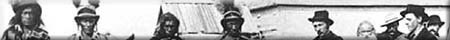
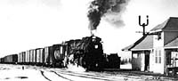
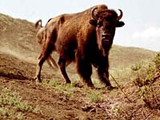
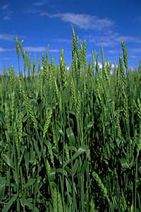
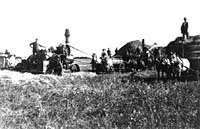

|
|

|
|
|
|

|
Fur traders were the first white men to exploit the Prairies and open them for settlement. They swapped their goods with the Indians for beaver, wolf and fox pelts, tanned bison robes and hides, tongues, tallow, dried meat, pemmican, and horses. By the 1870s, traffic in processed bison hides gave way to extensive trade in dry, raw hides. Hide hunters arrived from the east, and in just twelve years, their greed had ruthlessly wiped out the bison herds. Starving, their livelihood gone, the Plains Indians were forced to give up their nomadic life. The way was open for the stockmen and wheat farmers who were soon to tame virgin grassland with the plow and fence. |

The railways strongly influenced the agriculture of the Plains, opening up new areas for farming as they built lines into unsettled areas. The first railroad was built by the Canadian Pacific Railway (CPR), who obtained land as partial payment from the government. The CPR actively recruited settlers to gain income from the sale of the land, and to generate business. A lifeline for most communities, the railways carried passengers, freight and the mail, and hauled grain and livestock to seaports and markets. |
A period of intense railway building from 1890 to about 1910 stimulated growth in population and farms. Railway construction continued until the 1930s, when the last lines were extended to the agricultural frontier. Faced with competition from modern highway transportation, beginning in the 1950s, the railway declined. The loss of the railway and related grain elevators often heralds the decline of the rural communities that served it. |

The Prairie was once variety and wilderness, where bison roamed and waving grasses and flowers added colour, pattern and texture. Now there are the geometric shapes of monoculture; building and city outlines break the smooth horizon; sloughs are drained; trees thrive where they had never existed before; and many prairie species are threatened or extinct. |

Although European settlers adopted some native North American crops such as corn, sunflowers, squash and beans, they introduced almost all the crops and animals now produced on the prairie farms. The settlers brought wheat, rye, barley, oats, peas and flax, cattle, hogs, chickens and sheep. They also introduced forage species such as alfalfa, clover and Brome grass. Even most plant and animal pests that plague farmers today were inadvertently brought into the area. Kochia and Baby's Breath are examples of introduced ornamental plants that became weeds. We continue to introduce new crops and animals to the Prairies, but with careful regulation to prevent the further introduction of weeds, pests and diseases. |
The first agricultural settlement on the prairies was on the Red
River near Winnipeg. The European settlers, called the Selkirk
Settlers, arrived there in 1812. Wheat, barley, oats and vegetables
were harvested. Disasters such as hail, grasshoppers, locusts and typhus
were overcome and a permanent settlement was established. One
of the greatest barriers to agricultural grain production on the
prairies was the short growing season, a problem that would be
solved in the future by plant breeding and selection.
Settlement of the area further west was discouraged by the Hudson's
Bay Company. The operators of the company felt that colonists
and railways would destroy the fur trade in the area. In the 1850s
the British government sent an expedition headed by Captain John
Palliser to report on the suitability of the western plains and
parkland region for agriculture and colonization. The report stated
that the parkland region was fertile and suitable for agriculture,
but the plains area was unsuitable. This area, described as Palliser's Triangle, occurs between longitude 100° to 114°W and extends from the 49th parallel to the 52nd parallel at its apex.
This area in southwestern Saskatchewan and parts of Alberta was
described as having limited and uncertain rainfall and a lack
of water, making settlement almost impossible.
The governments of Upper and Lower Canada were also interested
in the agricultural possibilities of the West and sent S. J. Dawson
and H. Y. Hind to investigate its potential for agricultural settlement.
Their report was much more favourable than Palliser's.
The newly formed Dominion of Canada was encouraged to purchase
the majority of Rupertsland from the Hudson's Bay Company because
of
- the Hind and Palliser reports,
- financial interests in London,
England and Montreal, Canada and
- the purchase of Alaska by
the United States.
The British government approved the sale in 1868. The area, which
included the area that would become Saskatchewan, was renamed
the NorthWest Territories.
In 1870, the Homestead Act offered free land to male settlers
in western Canada. This act directly infringed upon the rights
and beliefs of the Indian peoples who believed that land could
not be owned.
The Homestead Act made approximately sixteen out of thirty six
sections in each municipality available for homesteading. The
remaining sections were owned by railway companies or the Hudson's
Bay Company or were reserved for building schools. Upon paying
a registration fee of ten dollars, residing on the land for three
years and breaking a specified number of acres, the settler could
own the land. A rush of settlers was expected, but did not occur.
The settlers who did come settled in the parkland area. According
to John Archer in Saskatchewan: A History, the most
advanced agricultural settlement prior to the coming of the railway
was in the Prince Albert district. By 1871 the settlement, which
began as a mission in 1866, had broken forty acres, owned a threshing
machine and operated a grinding mill. By 1870 there were also
farming operations at Fort Qu'Appelle, Touchwood Hills, FortalaCorne
and Nipawin mission. The majority of settlers appeared to prefer
the "fertile belt".
After 1870 the Métis people began to settle at the missions
on the Fishing Lakes, at Crooked Lake and around Batoche and Duck
Lake. By 1879 most of these missions were established agricultural
settlements with many Métis people settling on farms around
the missions.
During the 1870s, Palliser's assessment of the agricultural possibilities
of the West was revised by John Macoun, a Canadian botanist. He
predicted that "Palliser's Triangle" would become one
of the best wheat lands because rainfall occurred when it was
needed. |

Prior to the building of the railway, transportation across the
prairies was by cart or by boat and portage. Hauling household
goods was difficult and expensive. As the Canadian Pacific Railway
extended westward during the 1880s, homesteaders began to take
advantage of the offer of free land. Wheat farms and cattle, horse
and sheep ranches were established.
Settlers in the fertile belt around Prince Albert and Battleford
criticized the building of the railway through the southern part
of the territory. Programs encouraging settlers to homestead on
land around the railway were established. These programs, together
with the completion of the railway, fostered settlement in the
southern area of the territory. |
|
|
|
|